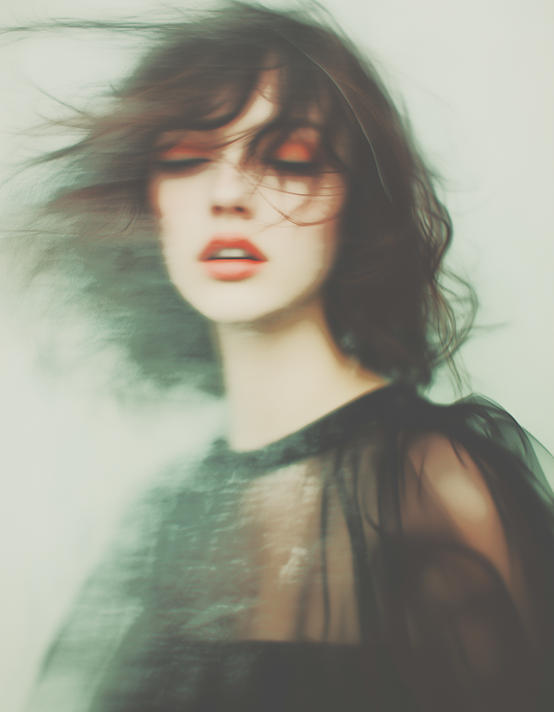
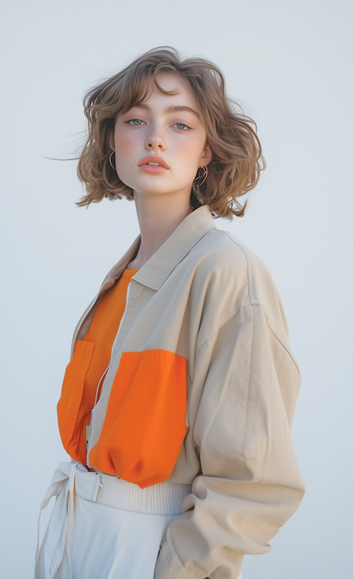
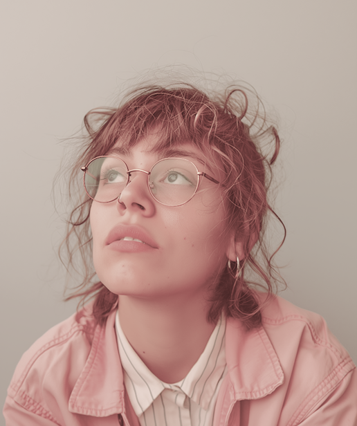
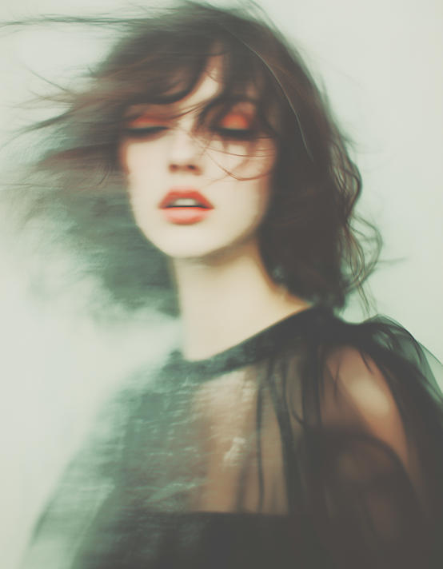
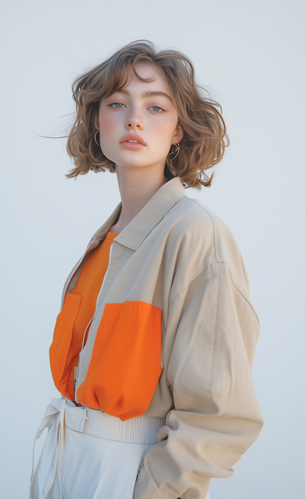
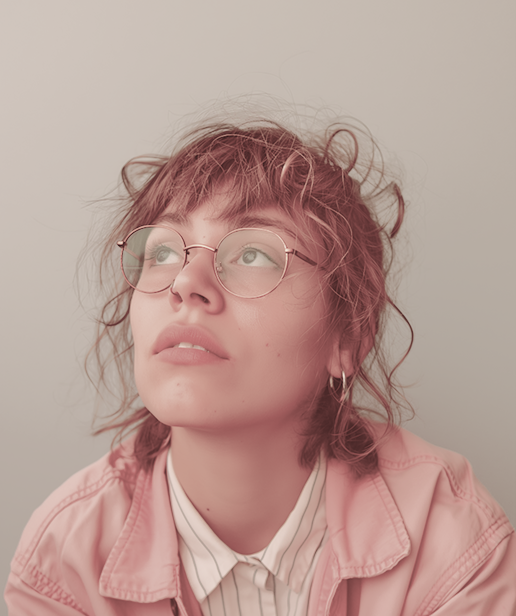

цветовой портрет:
разгадайте тайны
своих предпочтений
Вы когда‑нибудь задумывались, почему вас так сильно привлекает определённый цвет, а другой вызывает отторжение? Ваши любимые оттенки в одежде, интерьере и даже еде — это не случайный выбор, а отражение вашего внутреннего мира, вашей личности и ваших потребностей. «Цветовой портрет» – это увлекательный инструмент самопознания, который поможет вам разгадать тайны ваших предпочтений и использовать силу цвета для достижения гармонии и успеха.
Что такое цветовой портрет?
Цветовой портрет — это анализ ваших любимых и нелюбимых цветов, который позволяет выявить ваши сильные и слабые стороны, мотивации, страхи и таланты. Каждый цвет ассоциируется с определёнными чертами характера, эмоциями и психологическими состояниями. Анализируя ваши предпочтения, можно получить ценную информацию о вашей личности, которая поможет вам лучше понять себя и окружающих.
Как составить свой цветовой портрет:
Определите свои любимые и нелюбимые цвета:
Составьте список цветов, которые вызывают у вас наиболее
сильные эмоции (как положительные, так и отрицательные).
Исследуйте значение каждого цвета:
Изучите, какие черты характера, эмоции и ассоциации связаны
с каждым цветом из вашего списка.
Проанализируйте свои предпочтения:
Подумайте, почему вас привлекают или отталкивают
определенные цвета. Связано ли это с вашим опытом,
воспоминаниями или текущим эмоциональным состоянием?
Сделайте выводы:
На основе анализа своих предпочтений и значений
цветов, составьте свой цветовой портрет, выделив свои
сильные и слабые стороны, мотивации и страхи.
Примеры значений цветов:
Как использовать свой цветовой портрет:
Для самопознания:
Лучше понять свои сильные и слабые стороны, мотивации и страхи.
Для личностного роста:
спользовать сильные стороны, связанные с вашими любимыми
цветами, для достижения целей и преодоления трудностей.
Для улучшения взаимоотношений:
Понять, какие цвета привлекают и отталкивают окружающих,
и использовать эту информацию для налаживания более
эффективной коммуникации.
Для создания гармоничного пространства:
выбирать цвета для интерьера и одежды, которые соответствуют
вашему эмоциональному состоянию и потребностям.
Захотелось ли вам составить свой цветовой портрет?
Вам может быть интересно
cезонные цветовые стратегии
цвет – двигатель продаж: психология цвета в действии
 





комментарии
0